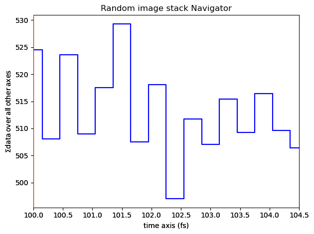
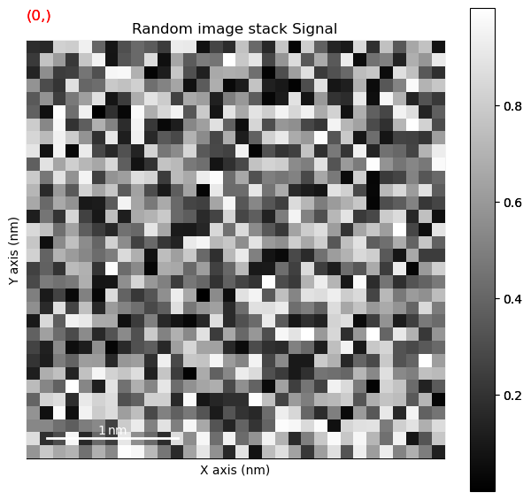
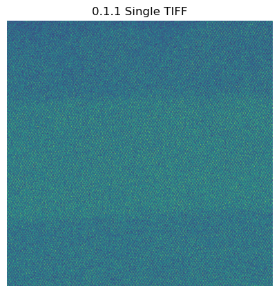
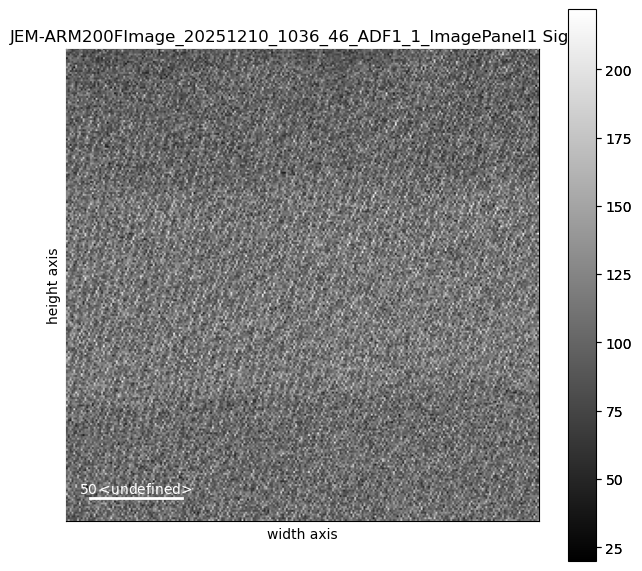
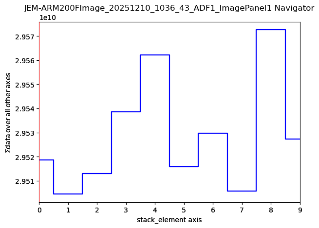
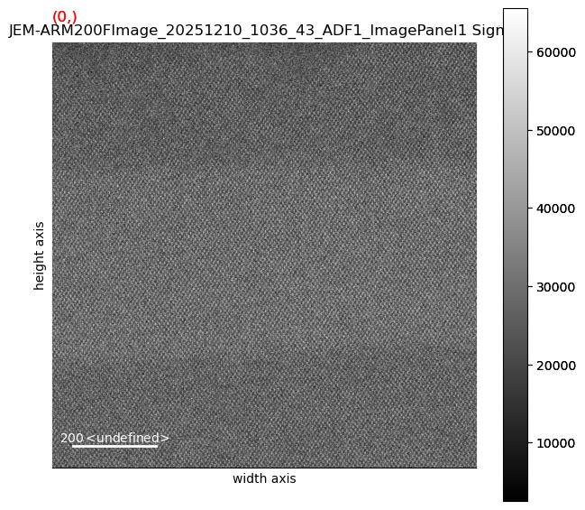
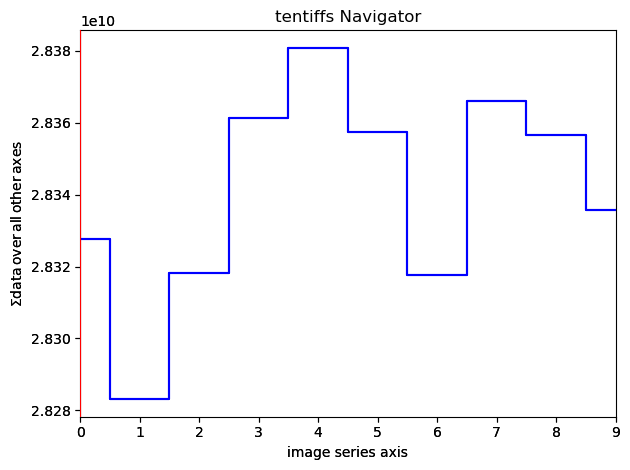
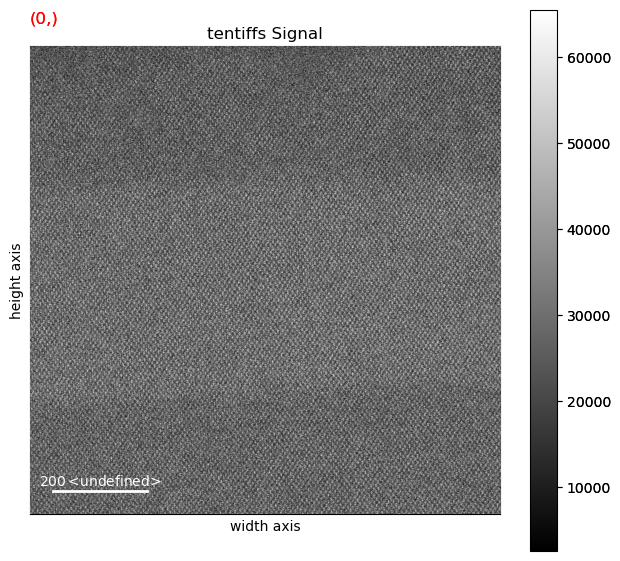

#import the modules we'll be using later.
import os, re, json, hashlib
from datetime import datetime
from pathlib import Path
import numpy as np
import matplotlib.pyplot as plt
import tifffile as tiff
import h5py # Used for HDF5, if we decide to actually use that.
from scipy import ndimage
from scipy.signal import fftconvolve
import hyperspy.api as hsHyperspy experiments
This is a throwaway notebook just for experimenting. DO NOT assume anything in here is correct, makes sense, or for that matter safe to be in the same room with.
First, the simplest use of HyperSpy just to get the blood flowing and limbs limbered up.
# straight out of the hyperspy example directory. Possibly with some changes. Likely.
import numpy as np
import hyperspy.api as hs
# Create an image stack with random data
im = hs.signals.Signal2D(np.random.random((16, 32, 32)))
# Define the axis properties
im.axes_manager.signal_axes[0].name = 'X'
im.axes_manager.signal_axes[0].units = 'nm'
im.axes_manager.signal_axes[0].scale = 0.1
im.axes_manager.signal_axes[0].offset = 0
im.axes_manager.signal_axes[1].name = 'Y'
im.axes_manager.signal_axes[1].units = 'nm'
im.axes_manager.signal_axes[1].scale = 0.1
im.axes_manager.signal_axes[1].offset = 0
im.axes_manager.navigation_axes[0].name = 'time'
im.axes_manager.navigation_axes[0].units = 'fs'
im.axes_manager.navigation_axes[0].scale = 0.3
im.axes_manager.navigation_axes[0].offset = 100
# Give a title
im.metadata.General.title = 'Random image stack'
# Plot it
im.plot()

Now let’s define some of the convenience functions we were using in the ChatGPT-generated examples.
#straight outta Codex...
#
# === Module 0.1 utilities ===
HAS_TIFFFILE = True
HAS_H5PY = True
HAS_SCIPY = True
def read_tiff(path):
if HAS_TIFFFILE:
arr = tiff.imread(path)
return arr
import matplotlib.image as mpimg
arr = mpimg.imread(path)
if arr.ndim == 3:
arr = arr.mean(axis=2)
return arr.astype(float)
def save_jpeg_thumbnail(img2d, out_path, p_low=1, p_high=99, max_size=512):
img = img2d.astype(float)
lo, hi = np.percentile(img, [p_low, p_high])
img = np.clip((img - lo) / (hi - lo + 1e-12), 0, 1)
H, W = img.shape
scale = max(H, W) / max_size
if scale > 1:
step = int(np.ceil(scale))
img = img[::step, ::step]
plt.imsave(out_path, img, cmap=None)
def image_stats(img2d):
img = img2d.astype(float)
return {
"shape": list(img.shape),
"dtype": str(img2d.dtype),
"min": float(np.min(img)),
"max": float(np.max(img)),
"mean": float(np.mean(img)),
"std": float(np.std(img)),
"p1": float(np.percentile(img, 1)),
"p50": float(np.percentile(img, 50)),
"p99": float(np.percentile(img, 99))
}
def sha256_file(path, chunk_size=1024*1024):
h = hashlib.sha256()
with open(path, "rb") as f:
while True:
b = f.read(chunk_size)
if not b:
break
h.update(b)
return h.hexdigest()
def safe_mkdir(p):
Path(p).mkdir(parents=True, exist_ok=True)
…and go ahead now and set the paths for inputs and outputs.
SINGLE_TIFF_PATH = "/Users/escott/projects/citeam/SiGe/JEM-ARM200FImage_20251210_1036_43_ADF1_ImagePanel1/JEM-ARM200FImage_20251210_1036_46_ADF1_1_ImagePanel1.tif" # e.g., "data/single/micrograph_01.tif"
STACK_FOLDER_PATH = "/Users/escott/projects/citeam/SiGe/JEM-ARM200FImage_20251210_1036_43_ADF1_ImagePanel1" # e.g., "data/stack_01_frames/"
OUTPUT_DIR = "outputs_0_1"
safe_mkdir(OUTPUT_DIR)
print("OUTPUT_DIR:", OUTPUT_DIR)OUTPUT_DIR: outputs_0_1For the sake of completeness, let’s go ahead and load our single image again. We may decide later we still want to play with it.
# 0.1.1 — Load a single TIFF
if not SINGLE_TIFF_PATH:
print("Set SINGLE_TIFF_PATH to a TIFF file.")
else:
img = read_tiff(SINGLE_TIFF_PATH)
if img.ndim == 3:
img = img.mean(axis=2)
img = img.astype(float)
print("Single image stats:", json.dumps(image_stats(img), indent=2))
plt.figure(figsize=(5,5)); plt.imshow(img); plt.title("0.1.1 Single TIFF"); plt.axis("off"); plt.show()
thumb_path = os.path.join(OUTPUT_DIR, Path(SINGLE_TIFF_PATH).stem + "_thumb.jpg")
save_jpeg_thumbnail(img, thumb_path)
print("Saved thumbnail:", thumb_path)Single image stats: {
"shape": [
1024,
1024
],
"dtype": "float64",
"min": 2520.0,
"max": 65519.0,
"mean": 28151.08589744568,
"std": 11373.67557322414,
"p1": 6855.0,
"p50": 27148.0,
"p99": 56632.25
}
Saved thumbnail: outputs_0_1/JEM-ARM200FImage_20251210_1036_46_ADF1_1_ImagePanel1_thumb.jpgLoad the image again, but this time with HyperSpy.
We will create the “s” variable for playing with HyperSpy or the above-defined “img” variable for doing the Old School way.
# hs is hyperspy.
s = hs.load(SINGLE_TIFF_PATH)
print("loaded an image")
loaded an imagedir(s[0])['T',
'__abs__',
'__add__',
'__and__',
'__array__',
'__array_wrap__',
'__class__',
'__deepcopy__',
'__delattr__',
'__dict__',
'__dir__',
'__divmod__',
'__doc__',
'__eq__',
'__firstlineno__',
'__floordiv__',
'__format__',
'__ge__',
'__getattribute__',
'__getstate__',
'__gt__',
'__hash__',
'__iadd__',
'__iand__',
'__ifloordiv__',
'__ilshift__',
'__imod__',
'__imul__',
'__init__',
'__init_subclass__',
'__invert__',
'__ior__',
'__ipow__',
'__irshift__',
'__isub__',
'__iter__',
'__itruediv__',
'__ixor__',
'__le__',
'__len__',
'__lshift__',
'__lt__',
'__mod__',
'__module__',
'__mul__',
'__ne__',
'__neg__',
'__new__',
'__next__',
'__or__',
'__pos__',
'__pow__',
'__reduce__',
'__reduce_ex__',
'__repr__',
'__rshift__',
'__setattr__',
'__sizeof__',
'__static_attributes__',
'__str__',
'__sub__',
'__subclasshook__',
'__truediv__',
'__weakref__',
'__xor__',
'_additional_slicing_targets',
'_alias_signal_types',
'_apply_function_on_data_and_remove_axis',
'_assign_subclass',
'_auto_reverse_bss_component',
'_binary_operator_ruler',
'_calculate_recmatrix',
'_calculate_summary_statistics',
'_calibrate',
'_check_navigation_mask',
'_check_signal_dimension_equals_one',
'_check_signal_dimension_equals_two',
'_check_signal_mask',
'_cluster_analysis',
'_create_metadata',
'_cycle_signal',
'_data',
'_data_aligned_with_axes',
'_deepcopy_with_new_data',
'_distances_within_cluster',
'_dtype',
'_estimate_poissonian_noise_variance',
'_export_factors',
'_export_loadings',
'_get_array_slices',
'_get_cluster_algorithm',
'_get_cluster_preprocessing_algorithm',
'_get_cluster_signal',
'_get_cluster_signals_factors',
'_get_current_data',
'_get_factors',
'_get_iterating_kwargs',
'_get_loadings',
'_get_navigation_signal',
'_get_number_of_components_for_clustering',
'_get_plot_title',
'_get_signal2d_scale',
'_get_signal_signal',
'_get_undefined_axes_list',
'_iterate_signal',
'_lazy',
'_load_dictionary',
'_ma_workaround',
'_make_sure_data_is_contiguous',
'_map_all',
'_map_iterate',
'_mask_for_clustering',
'_metadata',
'_original_metadata',
'_plot',
'_plot_factors_or_pchars',
'_plot_loadings',
'_plot_permanent_markers',
'_print_summary',
'_remove_axis',
'_render_figure',
'_replot',
'_scale_data_for_clustering',
'_signal_dimension',
'_signal_type',
'_slicer',
'_summary',
'_to_dictionary',
'_unary_operator_ruler',
'_unfold',
'_unmix_components',
'_validate_rebin_args_and_get_factors',
'add_gaussian_noise',
'add_marker',
'add_poissonian_noise',
'add_ramp',
'align2D',
'apply_apodization',
'as_lazy',
'as_signal1D',
'as_signal2D',
'axes_manager',
'blind_source_separation',
'calibrate',
'change_dtype',
'cluster_analysis',
'copy',
'create_model',
'crop',
'crop_signal',
'data',
'decomposition',
'deepcopy',
'derivative',
'diff',
'estimate_elbow_position',
'estimate_number_of_clusters',
'estimate_poissonian_noise_variance',
'estimate_shift2D',
'events',
'export_bss_results',
'export_cluster_results',
'export_decomposition_results',
'fft',
'find_peaks',
'fold',
'get_bss_factors',
'get_bss_loadings',
'get_bss_model',
'get_cluster_distances',
'get_cluster_labels',
'get_cluster_signals',
'get_current_signal',
'get_decomposition_factors',
'get_decomposition_loadings',
'get_decomposition_model',
'get_dimensions_from_data',
'get_explained_variance_ratio',
'get_histogram',
'get_noise_variance',
'ifft',
'inav',
'indexmax',
'indexmin',
'integrate1D',
'integrate_simpson',
'interpolate_on_axis',
'is_rgb',
'is_rgba',
'is_rgbx',
'isig',
'learning_results',
'map',
'max',
'mean',
'metadata',
'min',
'models',
'nanmax',
'nanmean',
'nanmin',
'nanstd',
'nansum',
'nanvar',
'navigator',
'normalize_bss_components',
'normalize_decomposition_components',
'normalize_poissonian_noise',
'original_metadata',
'plot',
'plot_bss_factors',
'plot_bss_loadings',
'plot_bss_results',
'plot_cluster_distances',
'plot_cluster_labels',
'plot_cluster_metric',
'plot_cluster_results',
'plot_cluster_signals',
'plot_cumulative_explained_variance_ratio',
'plot_decomposition_factors',
'plot_decomposition_loadings',
'plot_decomposition_results',
'plot_explained_variance_ratio',
'print_summary_statistics',
'ragged',
'rebin',
'remove_spikes',
'reverse_bss_component',
'reverse_decomposition_component',
'rollaxis',
'save',
'set_noise_variance',
'set_signal_origin',
'set_signal_type',
'split',
'squeeze',
'std',
'sum',
'swap_axes',
'tmp_parameters',
'to_device',
'to_host',
'to_signal1D',
'transpose',
'undo_treatments',
'unfold',
'unfold_navigation_space',
'unfold_signal_space',
'unfolded',
'update_plot',
'valuemax',
'valuemin',
'var']s[0].plot()
s[1].plot()
Load an image stack (via HyperSpy’s load() function)
Load a directory full of images, presumably multiple samples of all the same thing, presumably because we’re going to average all of the values together at some point, presumably after alignment.
Presumably.
Python note: the “return sorted(…” line is a very elegant way to step through every filename is a given directory and return an alphabetized list of all the ones that have .tiff or .tif on the end.
def list_tiff_frames(folder):
folder = Path(folder)
exts = {".tif", ".tiff"}
return sorted([p for p in folder.iterdir() if p.suffix.lower() in exts])
tiffFilesWildcard = STACK_FOLDER_PATH + "/*.tif"
print("tfw = ", tiffFilesWildcard)
#imgStack = hs.load(list_tiff_frames(STACK_FOLDER_PATH))
imgStack = hs.load(tiffFilesWildcard, stack=True)
print("Found",len(imgStack)," frames.")
print(imgStack)
fullSizeStack = imgStack[0]
print(fullSizeStack)
fullSizeStack.plot()tfw = /Users/escott/projects/citeam/SiGe/JEM-ARM200FImage_20251210_1036_43_ADF1_ImagePanel1/*.tifFound 2 frames.
[<Signal2D, title: JEM-ARM200FImage_20251210_1036_43_ADF1_ImagePanel1, dimensions: (10|1024, 1024)>, <Signal2D, title: JEM-ARM200FImage_20251210_1036_43_ADF1_ImagePanel1, dimensions: (10|256, 256)>]
<Signal2D, title: JEM-ARM200FImage_20251210_1036_43_ADF1_ImagePanel1, dimensions: (10|1024, 1024)>

hs.print_known_signal_types()| signal_type | aliases | class name | package |
|---|
Next Step: Stack ’em up!
The easiest way (for now, possibly the only way, to handle multiple images at a time in HyperSpy is to combine all of your tiff images into one “multi page” tiff file and then read it with the load() function. In Mac or Linux environments, you can use the “tiffcp” command to create such a file:
tiffcp /Users/escott/projects/citeam/scopeImages/*.tif /Users/escott/Pictures/severalTiffsInOne.tif
This finds every tif file in the /Users/escott/projects/citeam/scopeImages directory, combines them into a single, large, multi-page tiff, and saves it in /Users/escott/Pictures.
In case you’re curious, both “tiff” and “tif” are correct - sort of. In the Bad Old Days, MSDOS and early versions of Windows could only handle three letter file extensions. That limitation has long been remedied, but the practice persists.
To install tiffcp on a Mac, assuming you already have Homebrew installed and working, you can use:
brew install libtiff
On linux (Ubuntu, Debian, Mint, or similar variants) use
sudo apt install libtiff-tools
Windows users are encouraged to make friends with Mac and/or Linux users.
wholeStack = hs.load('/Users/escott/projects/citeam/tentiffs.tif') # Load stack
print("got 'em")
print(type(wholeStack))
print(wholeStack)
print("metadata =", wholeStack.metadata)
print("original_metadata =", wholeStack.original_metadata)
shifts = wholeStack.estimate_shift2D() # Estimate shifts
wholeStack.align2D(shifts=shifts) # Apply alignment
wholeStack.plot()
got 'em
<class 'hyperspy._signals.signal2d.Signal2D'>
<Signal2D, title: , dimensions: (10|1024, 1024)>
metadata = ├── General
│ ├── FileIO
│ │ └── 0
│ │ ├── hyperspy_version = 2.4.0
│ │ ├── io_plugin = rsciio.tiff
│ │ ├── operation = load
│ │ └── timestamp = 2026-03-17T23:04:27.623203-04:00
│ ├── original_filename = tentiffs.tif
│ └── title =
└── Signal
└── signal_type =
original_metadata = ├── BitsPerSample = 16
├── Compression = <COMPRESSION.NONE: 1>
├── ImageDescription = <?xml version="1.0"?>
<TemReporter xmlns:xsd="http://www.w3.org/2001/XMLSchem ... ourceDetector>
<ThirdParty>
<Items />
</ThirdParty>
</TemReporter>
├── ImageLength = 1024
├── ImageWidth = 1024
├── Orientation = <ORIENTATION.TOPLEFT: 1>
├── PhotometricInterpretation = <PHOTOMETRIC.MINISBLACK: 1>
├── PlanarConfiguration = <PLANARCONFIG.CONTIG: 1>
├── RowsPerStrip = 4
├── SamplesPerPixel = 1
├── StripByteCounts <tuple>
│ ╠══ [0] = 8192
│ ╠══ [1] = 8192
│ ╠══ [10] = 8192
│ ╠══ [100] = 8192
│ ╠══ [101] = 8192
│ ╠══ [102] = 8192
│ ╠══ [103] = 8192
│ ╠══ [104] = 8192
│ ╠══ [105] = 8192
│ ╠══ [106] = 8192
│ ╠══ [107] = 8192
│ ╠══ [108] = 8192
│ ╠══ [109] = 8192
│ ╠══ [11] = 8192
│ ╠══ [110] = 8192
│ ╠══ [111] = 8192
│ ╠══ [112] = 8192
│ ╠══ [113] = 8192
│ ╠══ [114] = 8192
│ ╠══ [115] = 8192
│ ╠══ [116] = 8192
│ ╠══ [117] = 8192
│ ╠══ [118] = 8192
│ ╠══ [119] = 8192
│ ╠══ [12] = 8192
│ ╠══ [120] = 8192
│ ╠══ [121] = 8192
│ ╠══ [122] = 8192
│ ╠══ [123] = 8192
│ ╠══ [124] = 8192
│ ╠══ [125] = 8192
│ ╠══ [126] = 8192
│ ╠══ [127] = 8192
│ ╠══ [128] = 8192
│ ╠══ [129] = 8192
│ ╠══ [13] = 8192
│ ╠══ [130] = 8192
│ ╠══ [131] = 8192
│ ╠══ [132] = 8192
│ ╠══ [133] = 8192
│ ╠══ [134] = 8192
│ ╠══ [135] = 8192
│ ╠══ [136] = 8192
│ ╠══ [137] = 8192
│ ╠══ [138] = 8192
│ ╠══ [139] = 8192
│ ╠══ [14] = 8192
│ ╠══ [140] = 8192
│ ╠══ [141] = 8192
│ ╠══ [142] = 8192
│ ╠══ [143] = 8192
│ ╠══ [144] = 8192
│ ╠══ [145] = 8192
│ ╠══ [146] = 8192
│ ╠══ [147] = 8192
│ ╠══ [148] = 8192
│ ╠══ [149] = 8192
│ ╠══ [15] = 8192
│ ╠══ [150] = 8192
│ ╠══ [151] = 8192
│ ╠══ [152] = 8192
│ ╠══ [153] = 8192
│ ╠══ [154] = 8192
│ ╠══ [155] = 8192
│ ╠══ [156] = 8192
│ ╠══ [157] = 8192
│ ╠══ [158] = 8192
│ ╠══ [159] = 8192
│ ╠══ [16] = 8192
│ ╠══ [160] = 8192
│ ╠══ [161] = 8192
│ ╠══ [162] = 8192
│ ╠══ [163] = 8192
│ ╠══ [164] = 8192
│ ╠══ [165] = 8192
│ ╠══ [166] = 8192
│ ╠══ [167] = 8192
│ ╠══ [168] = 8192
│ ╠══ [169] = 8192
│ ╠══ [17] = 8192
│ ╠══ [170] = 8192
│ ╠══ [171] = 8192
│ ╠══ [172] = 8192
│ ╠══ [173] = 8192
│ ╠══ [174] = 8192
│ ╠══ [175] = 8192
│ ╠══ [176] = 8192
│ ╠══ [177] = 8192
│ ╠══ [178] = 8192
│ ╠══ [179] = 8192
│ ╠══ [18] = 8192
│ ╠══ [180] = 8192
│ ╠══ [181] = 8192
│ ╠══ [182] = 8192
│ ╠══ [183] = 8192
│ ╠══ [184] = 8192
│ ╠══ [185] = 8192
│ ╠══ [186] = 8192
│ ╠══ [187] = 8192
│ ╠══ [188] = 8192
│ ╠══ [189] = 8192
│ ╠══ [19] = 8192
│ ╠══ [190] = 8192
│ ╠══ [191] = 8192
│ ╠══ [192] = 8192
│ ╠══ [193] = 8192
│ ╠══ [194] = 8192
│ ╠══ [195] = 8192
│ ╠══ [196] = 8192
│ ╠══ [197] = 8192
│ ╠══ [198] = 8192
│ ╠══ [199] = 8192
│ ╠══ [2] = 8192
│ ╠══ [20] = 8192
│ ╠══ [200] = 8192
│ ╠══ [201] = 8192
│ ╠══ [202] = 8192
│ ╠══ [203] = 8192
│ ╠══ [204] = 8192
│ ╠══ [205] = 8192
│ ╠══ [206] = 8192
│ ╠══ [207] = 8192
│ ╠══ [208] = 8192
│ ╠══ [209] = 8192
│ ╠══ [21] = 8192
│ ╠══ [210] = 8192
│ ╠══ [211] = 8192
│ ╠══ [212] = 8192
│ ╠══ [213] = 8192
│ ╠══ [214] = 8192
│ ╠══ [215] = 8192
│ ╠══ [216] = 8192
│ ╠══ [217] = 8192
│ ╠══ [218] = 8192
│ ╠══ [219] = 8192
│ ╠══ [22] = 8192
│ ╠══ [220] = 8192
│ ╠══ [221] = 8192
│ ╠══ [222] = 8192
│ ╠══ [223] = 8192
│ ╠══ [224] = 8192
│ ╠══ [225] = 8192
│ ╠══ [226] = 8192
│ ╠══ [227] = 8192
│ ╠══ [228] = 8192
│ ╠══ [229] = 8192
│ ╠══ [23] = 8192
│ ╠══ [230] = 8192
│ ╠══ [231] = 8192
│ ╠══ [232] = 8192
│ ╠══ [233] = 8192
│ ╠══ [234] = 8192
│ ╠══ [235] = 8192
│ ╠══ [236] = 8192
│ ╠══ [237] = 8192
│ ╠══ [238] = 8192
│ ╠══ [239] = 8192
│ ╠══ [24] = 8192
│ ╠══ [240] = 8192
│ ╠══ [241] = 8192
│ ╠══ [242] = 8192
│ ╠══ [243] = 8192
│ ╠══ [244] = 8192
│ ╠══ [245] = 8192
│ ╠══ [246] = 8192
│ ╠══ [247] = 8192
│ ╠══ [248] = 8192
│ ╠══ [249] = 8192
│ ╠══ [25] = 8192
│ ╠══ [250] = 8192
│ ╠══ [251] = 8192
│ ╠══ [252] = 8192
│ ╠══ [253] = 8192
│ ╠══ [254] = 8192
│ ╠══ [255] = 8192
│ ╠══ [26] = 8192
│ ╠══ [27] = 8192
│ ╠══ [28] = 8192
│ ╠══ [29] = 8192
│ ╠══ [3] = 8192
│ ╠══ [30] = 8192
│ ╠══ [31] = 8192
│ ╠══ [32] = 8192
│ ╠══ [33] = 8192
│ ╠══ [34] = 8192
│ ╠══ [35] = 8192
│ ╠══ [36] = 8192
│ ╠══ [37] = 8192
│ ╠══ [38] = 8192
│ ╠══ [39] = 8192
│ ╠══ [4] = 8192
│ ╠══ [40] = 8192
│ ╠══ [41] = 8192
│ ╠══ [42] = 8192
│ ╠══ [43] = 8192
│ ╠══ [44] = 8192
│ ╠══ [45] = 8192
│ ╠══ [46] = 8192
│ ╠══ [47] = 8192
│ ╠══ [48] = 8192
│ ╠══ [49] = 8192
│ ╠══ [5] = 8192
│ ╠══ [50] = 8192
│ ╠══ [51] = 8192
│ ╠══ [52] = 8192
│ ╠══ [53] = 8192
│ ╠══ [54] = 8192
│ ╠══ [55] = 8192
│ ╠══ [56] = 8192
│ ╠══ [57] = 8192
│ ╠══ [58] = 8192
│ ╠══ [59] = 8192
│ ╠══ [6] = 8192
│ ╠══ [60] = 8192
│ ╠══ [61] = 8192
│ ╠══ [62] = 8192
│ ╠══ [63] = 8192
│ ╠══ [64] = 8192
│ ╠══ [65] = 8192
│ ╠══ [66] = 8192
│ ╠══ [67] = 8192
│ ╠══ [68] = 8192
│ ╠══ [69] = 8192
│ ╠══ [7] = 8192
│ ╠══ [70] = 8192
│ ╠══ [71] = 8192
│ ╠══ [72] = 8192
│ ╠══ [73] = 8192
│ ╠══ [74] = 8192
│ ╠══ [75] = 8192
│ ╠══ [76] = 8192
│ ╠══ [77] = 8192
│ ╠══ [78] = 8192
│ ╠══ [79] = 8192
│ ╠══ [8] = 8192
│ ╠══ [80] = 8192
│ ╠══ [81] = 8192
│ ╠══ [82] = 8192
│ ╠══ [83] = 8192
│ ╠══ [84] = 8192
│ ╠══ [85] = 8192
│ ╠══ [86] = 8192
│ ╠══ [87] = 8192
│ ╠══ [88] = 8192
│ ╠══ [89] = 8192
│ ╠══ [9] = 8192
│ ╠══ [90] = 8192
│ ╠══ [91] = 8192
│ ╠══ [92] = 8192
│ ╠══ [93] = 8192
│ ╠══ [94] = 8192
│ ╠══ [95] = 8192
│ ╠══ [96] = 8192
│ ╠══ [97] = 8192
│ ╠══ [98] = 8192
│ ╚══ [99] = 8192
├── StripOffsets <tuple>
│ ╠══ [0] = 8
│ ╠══ [1] = 8200
│ ╠══ [10] = 81928
│ ╠══ [100] = 819208
│ ╠══ [101] = 827400
│ ╠══ [102] = 835592
│ ╠══ [103] = 843784
│ ╠══ [104] = 851976
│ ╠══ [105] = 860168
│ ╠══ [106] = 868360
│ ╠══ [107] = 876552
│ ╠══ [108] = 884744
│ ╠══ [109] = 892936
│ ╠══ [11] = 90120
│ ╠══ [110] = 901128
│ ╠══ [111] = 909320
│ ╠══ [112] = 917512
│ ╠══ [113] = 925704
│ ╠══ [114] = 933896
│ ╠══ [115] = 942088
│ ╠══ [116] = 950280
│ ╠══ [117] = 958472
│ ╠══ [118] = 966664
│ ╠══ [119] = 974856
│ ╠══ [12] = 98312
│ ╠══ [120] = 983048
│ ╠══ [121] = 991240
│ ╠══ [122] = 999432
│ ╠══ [123] = 1007624
│ ╠══ [124] = 1015816
│ ╠══ [125] = 1024008
│ ╠══ [126] = 1032200
│ ╠══ [127] = 1040392
│ ╠══ [128] = 1048584
│ ╠══ [129] = 1056776
│ ╠══ [13] = 106504
│ ╠══ [130] = 1064968
│ ╠══ [131] = 1073160
│ ╠══ [132] = 1081352
│ ╠══ [133] = 1089544
│ ╠══ [134] = 1097736
│ ╠══ [135] = 1105928
│ ╠══ [136] = 1114120
│ ╠══ [137] = 1122312
│ ╠══ [138] = 1130504
│ ╠══ [139] = 1138696
│ ╠══ [14] = 114696
│ ╠══ [140] = 1146888
│ ╠══ [141] = 1155080
│ ╠══ [142] = 1163272
│ ╠══ [143] = 1171464
│ ╠══ [144] = 1179656
│ ╠══ [145] = 1187848
│ ╠══ [146] = 1196040
│ ╠══ [147] = 1204232
│ ╠══ [148] = 1212424
│ ╠══ [149] = 1220616
│ ╠══ [15] = 122888
│ ╠══ [150] = 1228808
│ ╠══ [151] = 1237000
│ ╠══ [152] = 1245192
│ ╠══ [153] = 1253384
│ ╠══ [154] = 1261576
│ ╠══ [155] = 1269768
│ ╠══ [156] = 1277960
│ ╠══ [157] = 1286152
│ ╠══ [158] = 1294344
│ ╠══ [159] = 1302536
│ ╠══ [16] = 131080
│ ╠══ [160] = 1310728
│ ╠══ [161] = 1318920
│ ╠══ [162] = 1327112
│ ╠══ [163] = 1335304
│ ╠══ [164] = 1343496
│ ╠══ [165] = 1351688
│ ╠══ [166] = 1359880
│ ╠══ [167] = 1368072
│ ╠══ [168] = 1376264
│ ╠══ [169] = 1384456
│ ╠══ [17] = 139272
│ ╠══ [170] = 1392648
│ ╠══ [171] = 1400840
│ ╠══ [172] = 1409032
│ ╠══ [173] = 1417224
│ ╠══ [174] = 1425416
│ ╠══ [175] = 1433608
│ ╠══ [176] = 1441800
│ ╠══ [177] = 1449992
│ ╠══ [178] = 1458184
│ ╠══ [179] = 1466376
│ ╠══ [18] = 147464
│ ╠══ [180] = 1474568
│ ╠══ [181] = 1482760
│ ╠══ [182] = 1490952
│ ╠══ [183] = 1499144
│ ╠══ [184] = 1507336
│ ╠══ [185] = 1515528
│ ╠══ [186] = 1523720
│ ╠══ [187] = 1531912
│ ╠══ [188] = 1540104
│ ╠══ [189] = 1548296
│ ╠══ [19] = 155656
│ ╠══ [190] = 1556488
│ ╠══ [191] = 1564680
│ ╠══ [192] = 1572872
│ ╠══ [193] = 1581064
│ ╠══ [194] = 1589256
│ ╠══ [195] = 1597448
│ ╠══ [196] = 1605640
│ ╠══ [197] = 1613832
│ ╠══ [198] = 1622024
│ ╠══ [199] = 1630216
│ ╠══ [2] = 16392
│ ╠══ [20] = 163848
│ ╠══ [200] = 1638408
│ ╠══ [201] = 1646600
│ ╠══ [202] = 1654792
│ ╠══ [203] = 1662984
│ ╠══ [204] = 1671176
│ ╠══ [205] = 1679368
│ ╠══ [206] = 1687560
│ ╠══ [207] = 1695752
│ ╠══ [208] = 1703944
│ ╠══ [209] = 1712136
│ ╠══ [21] = 172040
│ ╠══ [210] = 1720328
│ ╠══ [211] = 1728520
│ ╠══ [212] = 1736712
│ ╠══ [213] = 1744904
│ ╠══ [214] = 1753096
│ ╠══ [215] = 1761288
│ ╠══ [216] = 1769480
│ ╠══ [217] = 1777672
│ ╠══ [218] = 1785864
│ ╠══ [219] = 1794056
│ ╠══ [22] = 180232
│ ╠══ [220] = 1802248
│ ╠══ [221] = 1810440
│ ╠══ [222] = 1818632
│ ╠══ [223] = 1826824
│ ╠══ [224] = 1835016
│ ╠══ [225] = 1843208
│ ╠══ [226] = 1851400
│ ╠══ [227] = 1859592
│ ╠══ [228] = 1867784
│ ╠══ [229] = 1875976
│ ╠══ [23] = 188424
│ ╠══ [230] = 1884168
│ ╠══ [231] = 1892360
│ ╠══ [232] = 1900552
│ ╠══ [233] = 1908744
│ ╠══ [234] = 1916936
│ ╠══ [235] = 1925128
│ ╠══ [236] = 1933320
│ ╠══ [237] = 1941512
│ ╠══ [238] = 1949704
│ ╠══ [239] = 1957896
│ ╠══ [24] = 196616
│ ╠══ [240] = 1966088
│ ╠══ [241] = 1974280
│ ╠══ [242] = 1982472
│ ╠══ [243] = 1990664
│ ╠══ [244] = 1998856
│ ╠══ [245] = 2007048
│ ╠══ [246] = 2015240
│ ╠══ [247] = 2023432
│ ╠══ [248] = 2031624
│ ╠══ [249] = 2039816
│ ╠══ [25] = 204808
│ ╠══ [250] = 2048008
│ ╠══ [251] = 2056200
│ ╠══ [252] = 2064392
│ ╠══ [253] = 2072584
│ ╠══ [254] = 2080776
│ ╠══ [255] = 2088968
│ ╠══ [26] = 213000
│ ╠══ [27] = 221192
│ ╠══ [28] = 229384
│ ╠══ [29] = 237576
│ ╠══ [3] = 24584
│ ╠══ [30] = 245768
│ ╠══ [31] = 253960
│ ╠══ [32] = 262152
│ ╠══ [33] = 270344
│ ╠══ [34] = 278536
│ ╠══ [35] = 286728
│ ╠══ [36] = 294920
│ ╠══ [37] = 303112
│ ╠══ [38] = 311304
│ ╠══ [39] = 319496
│ ╠══ [4] = 32776
│ ╠══ [40] = 327688
│ ╠══ [41] = 335880
│ ╠══ [42] = 344072
│ ╠══ [43] = 352264
│ ╠══ [44] = 360456
│ ╠══ [45] = 368648
│ ╠══ [46] = 376840
│ ╠══ [47] = 385032
│ ╠══ [48] = 393224
│ ╠══ [49] = 401416
│ ╠══ [5] = 40968
│ ╠══ [50] = 409608
│ ╠══ [51] = 417800
│ ╠══ [52] = 425992
│ ╠══ [53] = 434184
│ ╠══ [54] = 442376
│ ╠══ [55] = 450568
│ ╠══ [56] = 458760
│ ╠══ [57] = 466952
│ ╠══ [58] = 475144
│ ╠══ [59] = 483336
│ ╠══ [6] = 49160
│ ╠══ [60] = 491528
│ ╠══ [61] = 499720
│ ╠══ [62] = 507912
│ ╠══ [63] = 516104
│ ╠══ [64] = 524296
│ ╠══ [65] = 532488
│ ╠══ [66] = 540680
│ ╠══ [67] = 548872
│ ╠══ [68] = 557064
│ ╠══ [69] = 565256
│ ╠══ [7] = 57352
│ ╠══ [70] = 573448
│ ╠══ [71] = 581640
│ ╠══ [72] = 589832
│ ╠══ [73] = 598024
│ ╠══ [74] = 606216
│ ╠══ [75] = 614408
│ ╠══ [76] = 622600
│ ╠══ [77] = 630792
│ ╠══ [78] = 638984
│ ╠══ [79] = 647176
│ ╠══ [8] = 65544
│ ╠══ [80] = 655368
│ ╠══ [81] = 663560
│ ╠══ [82] = 671752
│ ╠══ [83] = 679944
│ ╠══ [84] = 688136
│ ╠══ [85] = 696328
│ ╠══ [86] = 704520
│ ╠══ [87] = 712712
│ ╠══ [88] = 720904
│ ╠══ [89] = 729096
│ ╠══ [9] = 73736
│ ╠══ [90] = 737288
│ ╠══ [91] = 745480
│ ╠══ [92] = 753672
│ ╠══ [93] = 761864
│ ╠══ [94] = 770056
│ ╠══ [95] = 778248
│ ╠══ [96] = 786440
│ ╠══ [97] = 794632
│ ╠══ [98] = 802824
│ ╚══ [99] = 811016
├── XResolution = (4261413, 32768)
└── YResolution = (4261413, 32768)
100%|███████████████████████████████████████████████████████████████████████████████| 10/10 [00:03<00:00, 3.08it/s]

# 0.1.1 — Load a TIFF stack from a folder of frames
def list_tiff_frames(folder):
folder = Path(folder)
exts = {".tif", ".tiff"}
return sorted([p for p in folder.iterdir() if p.suffix.lower() in exts])
if not STACK_FOLDER_PATH:
print("Set STACK_FOLDER_PATH to a folder containing TIFF frames.")
else:
frame_files = list_tiff_frames(STACK_FOLDER_PATH)
print("Found frames:", len(frame_files))
if len(frame_files) == 0:
raise RuntimeError("No TIFF frames found in STACK_FOLDER_PATH.")
stack = []
for p in frame_files:
f = read_tiff(str(p))
if f.ndim == 3:
f = f.mean(axis=2)
stack.append(f.astype(float))
stack = np.stack(stack, axis=0) # (N,H,W)
print("Stack shape (N,H,W):", stack.shape)
for i in range(0, len(frame_files)):
plt.figure(figsize=(5,5)); plt.imshow(stack[i]); plt.title(f"0.1.1 Stack frame {i}"); plt.axis("off"); plt.show()
plt.figure(figsize=(5,4))
plt.hist(stack[0][0].ravel(), bins=128)
plt.title("0.1.2 Histogram (raw)")
plt.xlabel("Intensity"); plt.ylabel("Count")
plt.show()
print("============")
print("Percentilification :-) ")
p_low, p_high = 1, 99
lo, hi = np.percentile(imgStack[0][0], [p_low, p_high])
img_cs = np.clip((imgStack[0][0] - lo) / (hi - lo + 1e-12), 0, 1)
gamma = 1.0 # try 0.7 or 1.4
img_out = np.clip(img_cs ** gamma, 0, 1)
plt.figure(figsize=(5,5))
plt.imshow(img_out)
plt.title(f"0.1.2 Contrast-stretched ({p_low}-{p_high}%) + gamma={gamma}")
plt.axis("off")
plt.show()
# out_jpg = os.path.join(OUTPUT_DIR, Path(SINGLE_TIFF_PATH).stem + f"_cs_{p_low}_{p_high}_g{gamma}.jpg")
# save_jpeg_thumbnail(img_out, out_jpg, p_low=0, p_high=100)
# print("Saved JPEG:", out_jpg)
if HAS_TIFFFILE:
out_tif = os.path.join(OUTPUT_DIR, Path(SINGLE_TIFF_PATH).stem + f"_cs_{p_low}_{p_high}_g{gamma}.tif")
img_cs.save(out_tif, overwrite=True)
print("Saved TIFF:", out_tif)if not SINGLE_TIFF_PATH:
print("Set SINGLE_TIFF_PATH first.")
else:
img = read_tiff(SINGLE_TIFF_PATH)
if img.ndim == 3:
img = img.mean(axis=2)
img = img.astype(float)
plt.figure(figsize=(5,4))
plt.hist(img.ravel(), bins=128)
plt.title("0.1.2 Histogram (raw)")
plt.xlabel("Intensity"); plt.ylabel("Count")
plt.show()
p_low, p_high = 1, 99
lo, hi = np.percentile(img, [p_low, p_high])
img_cs = np.clip((img - lo) / (hi - lo + 1e-12), 0, 1)
gamma = 1.0 # try 0.7 or 1.4
img_out = np.clip(img_cs ** gamma, 0, 1)
plt.figure(figsize=(5,5))
plt.imshow(img_out)
plt.title(f"0.1.2 Contrast-stretched ({p_low}-{p_high}%) + gamma={gamma}")
plt.axis("off")
plt.show()
# inputs: img_out is the pervcentile-ed, gamma-ed image. Set sigma as needed
# output: dn -s the "de-noised" image.
sigma = 1.0 # try 0.5, 1.0, 2.0
dn = ndimage.gaussian_filter(img_out, sigma=sigma)
# now plot the result
plt.figure(figsize=(5,5))
plt.imshow(dn)
plt.title(f"0.1.3 After Gaussian (sigma={sigma})")
plt.axis("off")
plt.show()
out_jpg = os.path.join(OUTPUT_DIR, Path(SINGLE_TIFF_PATH).stem + f"_cs_{p_low}_{p_high}_g{gamma}.jpg")
save_jpeg_thumbnail(dn, out_jpg, p_low=0, p_high=100)
print("Saved JPEG:", out_jpg)
if HAS_TIFFFILE:
out_tif = os.path.join(OUTPUT_DIR, Path(SINGLE_TIFF_PATH).stem + f"_cs_{p_low}_{p_high}_g{gamma}.tif")
tiff.imwrite(out_tif, (img_out * 65535).astype(np.uint16))
print("Saved TIFF:", out_tif) sigma = 1.0 # try 0.5, 1.0, 2.0
dn = ndimage.gaussian_filter(vis, sigma=sigma)
plt.figure(figsize=(5,5)); plt.imshow(vis); plt.title("0.1.3 Before"); plt.axis("off"); plt.show()
plt.figure(figsize=(5,5)); plt.imshow(dn); plt.title(f"0.1.3 After Gaussian (sigma={sigma})"); plt.axis("off"); plt.show()if not SINGLE_TIFF_PATH:
print("Set SINGLE_TIFF_PATH first.")
elif not HAS_SCIPY:
print("SciPy not available; cannot run gaussian_filter.")
else:
img = read_tiff(SINGLE_TIFF_PATH)
if img.ndim == 3:
img = img.mean(axis=2)
img = img.astype(float)
lo, hi = np.percentile(img, [1, 99])
vis = np.clip((img - lo) / (hi - lo + 1e-12), 0, 1)
sigma = 1.0 # try 0.5, 1.0, 2.0
dn = ndimage.gaussian_filter(vis, sigma=sigma)
plt.figure(figsize=(5,5)); plt.imshow(vis); plt.title("0.1.3 Before"); plt.axis("off"); plt.show()
plt.figure(figsize=(5,5)); plt.imshow(dn); plt.title(f"0.1.3 After Gaussian (sigma={sigma})"); plt.axis("off"); plt.show()
out_jpg = os.path.join(OUTPUT_DIR, Path(SINGLE_TIFF_PATH).stem + f"_denoise_sigma{sigma}.jpg")
save_jpeg_thumbnail(dn, out_jpg, p_low=0, p_high=100)
print("Saved JPEG:", out_jpg)
if HAS_TIFFFILE:
out_tif = os.path.join(OUTPUT_DIR, Path(SINGLE_TIFF_PATH).stem + f"_denoise_sigma{sigma}.tif")
tiff.imwrite(out_tif, (dn * 65535).astype(np.uint16))
print("Saved TIFF:", out_tif)if not STACK_FOLDER_PATH:
print("Set STACK_FOLDER_PATH first.")
elif not HAS_SCIPY:
print("SciPy not available; cannot run drift correction.")
else:
frame_files = list_tiff_frames(STACK_FOLDER_PATH)
stack = []
for p in frame_files:
f = read_tiff(str(p))
if f.ndim == 3:
f = f.mean(axis=2)
stack.append(f.astype(float))
stack = np.stack(stack, axis=0)
# normalize per frame for robust correlation (used ONLY for shift estimation)
stack_n = np.empty_like(stack)
for i in range(stack.shape[0]):
lo, hi = np.percentile(stack[i], [1, 99])
stack_n[i] = np.clip((stack[i] - lo) / (hi - lo + 1e-12), 0, 1)
# use average normalized frame as reference for more stable shifts
ref = stack_n.mean(axis=0)
def estimate_shift(ref, img):
a = img - img.mean()
b = ref - ref.mean()
corr = fftconvolve(a, b[::-1, ::-1], mode="same")
y0, x0 = np.unravel_index(np.argmax(corr), corr.shape)
cy, cx = np.array(corr.shape) // 2
dy, dx = y0 - cy, x0 - cx
return -dy, -dx
aligned = [stack[0]]
shifts = [(0.0, 0.0)]
for i in range(1, stack_n.shape[0]):
dy, dx = estimate_shift(ref, stack_n[i])
shifts.append((float(dy), float(dx)))
aligned.append(ndimage.shift(stack[i], shift=(dy, dx), order=1, mode="nearest"))
aligned = np.stack(aligned, axis=0)
# compare averages on RAW intensity
avg_nocorr = stack.mean(axis=0)
avg_corr = aligned.mean(axis=0)
print("Shifts (dy, dx):")
for i, s in enumerate(shifts):
print(i, s)
plt.figure(figsize=(5,5)); plt.imshow(avg_nocorr); plt.title("0.1.4 Avg (no correction)"); plt.axis("off"); plt.show()
plt.figure(figsize=(5,5)); plt.imshow(avg_corr); plt.title("0.1.4 Avg (drift-corrected)"); plt.axis("off"); plt.show()
print('avg_nocorr type is ', type(avg_nocorr))
print('avg_nocorr itself is ',avg_nocorr)
print()
print('avg_driftcorr type is ', type(avg_nocorr))
print('avg_driftcorr itself is ',avg_nocorr)
base = Path(STACK_FOLDER_PATH).name.rstrip("/")
if HAS_TIFFFILE:
#tiff.imwrite(os.path.join(OUTPUT_DIR, f"{base}_avg_nocorr.tif"), (avg_nocorr*65535).astype(np.uint16))
#tiff.imwrite(os.path.join(OUTPUT_DIR, f"{base}_avg_driftcorr.tif"), (avg_corr*65535).astype(np.uint16))
tiff.imwrite(os.path.join(OUTPUT_DIR, f"{base}_avg_nocorr.tif"), avg_nocorr)
tiff.imwrite(os.path.join(OUTPUT_DIR, f"{base}_avg_driftcorr.tif"), avg_corr)
save_jpeg_thumbnail(avg_nocorr, os.path.join(OUTPUT_DIR, f"{base}_avg_nocorr.jpg"), p_low=0, p_high=100)
save_jpeg_thumbnail(avg_corr, os.path.join(OUTPUT_DIR, f"{base}_avg_driftcorr.jpg"), p_low=0, p_high=100)
print("Saved averaged outputs to", OUTPUT_DIR)# 0.1.5 — Interactive backend setup (Jupyter-friendly)
# Tries widget backend; falls back to notebook; otherwise inline + manual input.
try:
get_ipython
try:
%matplotlib widget
print('Using %matplotlib widget')
except Exception:
try:
%matplotlib notebook
print('Using %matplotlib notebook')
except Exception:
%matplotlib inline
print('Using %matplotlib inline (manual coordinate fallback will be used)')
except Exception:
pass
%matplotlib widgetif not SINGLE_TIFF_PATH:
print("Set SINGLE_TIFF_PATH first.")
else:
img = read_tiff(SINGLE_TIFF_PATH)
if img.ndim == 3:
img = img.mean(axis=2)
img = img.astype(float)
lo, hi = np.percentile(img, [1, 99])
vis = np.clip((img - lo) / (hi - lo + 1e-12), 0, 1)
def select_two_points(title, allow_manual=True):
fig = plt.figure(figsize=(6,6))
plt.imshow(vis); plt.title(title); plt.axis("off")
pts = []
print("going to try to get 2 points - wish me luck!")
try:
pts = plt.ginput(2, timeout=0)
except Exception:
pts = []
plt.close(fig)
print("len(pts) = ", len(pts))
if len(pts) < 2 and allow_manual:
print("Interactive selection failed. Enter coordinates manually as x1,y1,x2,y2")
raw = input("Coords: ").strip()
parts = [p.strip() for p in raw.split(",")]
if len(parts) == 4:
x1, y1, x2, y2 = map(float, parts)
pts = [(x1, y1), (x2, y2)]
return pts
print("Click TWO points for the feature (line profile), then press Enter.")
pts = select_two_points("Feature: click 2 points, Enter")
if len(pts) < 2:
raise RuntimeError("No points captured. Ensure interactive backend or use manual input.")
(x1, y1), (x2, y2) = pts
feature_px = float(np.hypot(x2-x1, y2-y1))
print(f"Feature length: {feature_px:.2f} px")
# --- Line profile along the selected feature ---
n_samples = int(max(2, np.ceil(feature_px)))
xs = np.linspace(x1, x2, n_samples)
ys = np.linspace(y1, y2, n_samples)
try:
# use scipy if available
if HAS_SCIPY:
from scipy.ndimage import map_coordinates
profile = map_coordinates(img, [ys, xs], order=1, mode='nearest')
else:
# nearest-neighbor fallback
xi = np.clip(np.round(xs).astype(int), 0, img.shape[1]-1)
yi = np.clip(np.round(ys).astype(int), 0, img.shape[0]-1)
profile = img[yi, xi]
except Exception:
xi = np.clip(np.round(xs).astype(int), 0, img.shape[1]-1)
yi = np.clip(np.round(ys).astype(int), 0, img.shape[0]-1)
profile = img[yi, xi]
plt.figure(figsize=(6,3))
plt.plot(profile)
plt.title("0.1.5 Line profile (intensity vs. distance)")
plt.xlabel("Sample index")
plt.ylabel("Intensity")
plt.show()
# Save profile to CSV
prof_path = os.path.join(OUTPUT_DIR, Path(SINGLE_TIFF_PATH).stem + "_line_profile.csv")
with open(prof_path, "w", encoding="utf-8") as f:
f.write("index,intensity")
for k, v in enumerate(profile):
f.write(f"{k},{float(v)}")
print("Saved line profile:", prof_path)
print("Now click TWO endpoints of the scale bar, then press Enter.")
sb = select_two_points("Scale bar: click 2 points, Enter")
if len(sb) < 2:
raise RuntimeError("No scale-bar points captured.")
(sx1, sy1), (sx2, sy2) = sb
sb_px = float(np.hypot(sx2-sx1, sy2-sy1))
print(f"Scale bar length: {sb_px:.2f} px")
sb_nm = float(input("Enter the scale bar length in nm (read from label): "))
nm_per_px = sb_nm / max(sb_px, 1e-12)
feature_nm = feature_px * nm_per_px
print(f"Calibration: {nm_per_px:.6f} nm/px")
print(f"Feature length: {feature_nm:.2f} nm")
out = {
"input_file": SINGLE_TIFF_PATH,
"feature_px": feature_px,
"scale_bar_px": sb_px,
"scale_bar_nm": sb_nm,
"nm_per_px": nm_per_px,
"feature_nm": feature_nm,
"created_utc": datetime.utcnow().isoformat() + "Z",
"line_profile_csv": prof_path,
}
out_path = os.path.join(OUTPUT_DIR, Path(SINGLE_TIFF_PATH).stem + "_measurement.json")
with open(out_path, "w", encoding="utf-8") as f:
json.dump(out, f, indent=2)
print("Saved measurement JSON:", out_path)
if not SINGLE_TIFF_PATH:
print("Set SINGLE_TIFF_PATH first.")
else:
img = read_tiff(SINGLE_TIFF_PATH)
if img.ndim == 3:
img = img.mean(axis=2)
img = img.astype(float)
p_low, p_high = 1, 99
lo, hi = np.percentile(img, [p_low, p_high])
proc = np.clip((img - lo) / (hi - lo + 1e-12), 0, 1)
sigma = 1.0
if HAS_SCIPY:
proc = ndimage.gaussian_filter(proc, sigma=sigma)
in_sha = sha256_file(SINGLE_TIFF_PATH) if os.path.exists(SINGLE_TIFF_PATH) else None
meta = {
"input_file": SINGLE_TIFF_PATH,
"input_sha256": in_sha,
"created_utc": datetime.utcnow().isoformat() + "Z",
"processing": [
{"step": "percentile_contrast", "p_low": p_low, "p_high": p_high},
{"step": "gaussian_denoise", "sigma": sigma, "scipy": bool(HAS_SCIPY)},
],
"stats_raw": image_stats(img),
"stats_processed": image_stats(proc),
"software": {
"python": f"{os.sys.version_info.major}.{os.sys.version_info.minor}.{os.sys.version_info.micro}",
"numpy": np.__version__,
},
}
base = Path(SINGLE_TIFF_PATH).stem
h5_path = os.path.join(OUTPUT_DIR, base + "_bundle.h5")
readme_path = os.path.join(OUTPUT_DIR, base + "_README.txt")
if HAS_H5PY:
import h5py
with h5py.File(h5_path, "w") as f:
f.create_dataset("raw", data=img, compression="gzip")
f.create_dataset("processed", data=proc, compression="gzip")
f.attrs["metadata_json"] = json.dumps(meta)
print("Wrote HDF5:", h5_path)
else:
print("h5py not available; skipping HDF5 export.")
readme = f"""TEM Processing README
====================
Input file: {SINGLE_TIFF_PATH}
Input sha256: {in_sha}
Created (UTC): {meta['created_utc']}
Processing:
- Percentile contrast: {p_low}–{p_high}%
- Gaussian denoise: sigma={sigma} (SciPy: {bool(HAS_SCIPY)})
Raw stats: {meta['stats_raw']}
Processed stats: {meta['stats_processed']}
Software:
- Python: {meta['software']['python']}
- NumPy: {meta['software']['numpy']}
"""
with open(readme_path, "w", encoding="utf-8") as f:
f.write(readme)
f.write("\nCode excerpt:\n")
f.write(" lo, hi = np.percentile(img, [p_low, p_high])\n")
f.write(" proc = np.clip((img - lo) / (hi - lo + 1e-12), 0, 1)\n")
f.write(" proc = ndimage.gaussian_filter(proc, sigma=sigma)\n")
print("Wrote README:", readme_path)